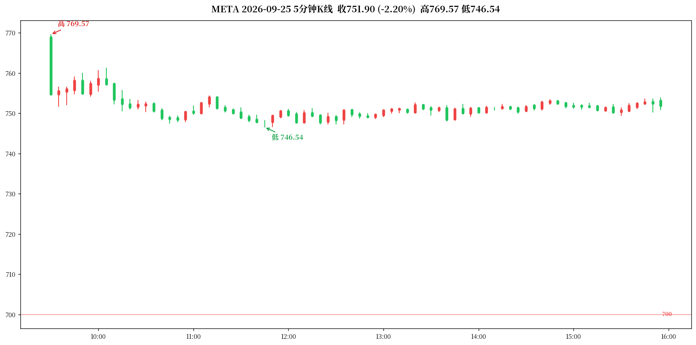

META 日内报告
2026年9月25日 · 周五 · 日内报告
751.90 -2.20%
开 768.84 · 高 769.57 · 低 746.54
早盘分析
（Junk-man 早盘简报未抓取到，留空待补）
（待补充 Junk-man 当日 #junkman-analysis 原文）
5 分钟 K 线
5分钟K线；夜航社 heatmap 历史仅保留最近3个交易日，本日无 heatmap 数据

夜航社 heatmap 历史仅保留最近3个交易日，本日无 heatmap 数据。
全天最大节点 TOP5
（当日无符合筛子的 flow 记录，或数据未拉取到）
YHS flow 历史从 2026-10-02 起，本日无 flow 数据。
分析总结
①开盘 768.84，最高 769.57，最低 746.54，收 751.90（-2.20%）。日内振幅 23.03 点。
收盘后的静态快照；页面不在打开时更新行情。